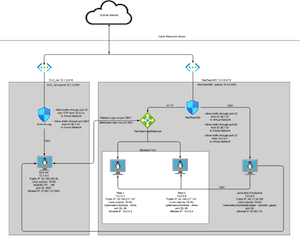
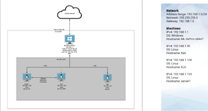

ELK Project
This was a solo project, where I configured a Azure Cloud network with 4 vms, 2 network security groups and a load balancer. Installed docker containers to deploy a fully functional ELK stack. Configured ELK to use filebeat and metricbeat.
 ELK Stack GithubRed Team / Blue Team Project
This is a Red Team / Blue Team project that was composed of three parts. The first part I acted as the Red Team and was tasked with gaining access to a web server. The second part I acted as the Blue Team to analyze the Red Team attack. I used Kibana and the metricbeat, filebeat and packetbeat packages to view the logs. The third part consisted of proposed alarms and mitigation strategies.
 Red Team/Blue Team Github